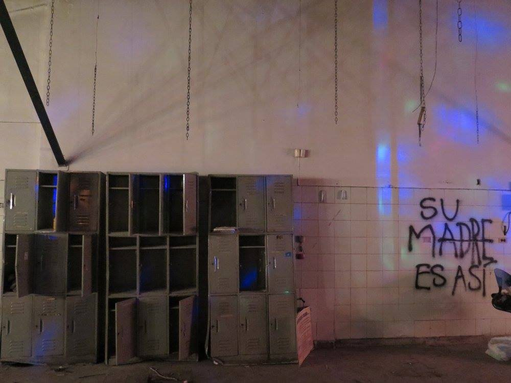
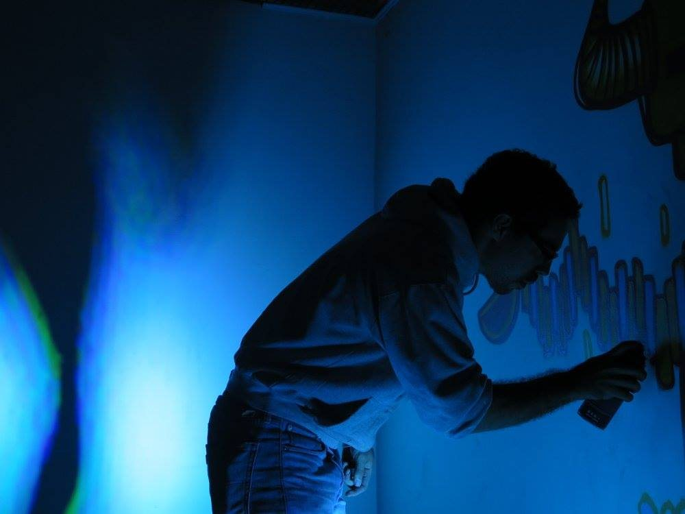
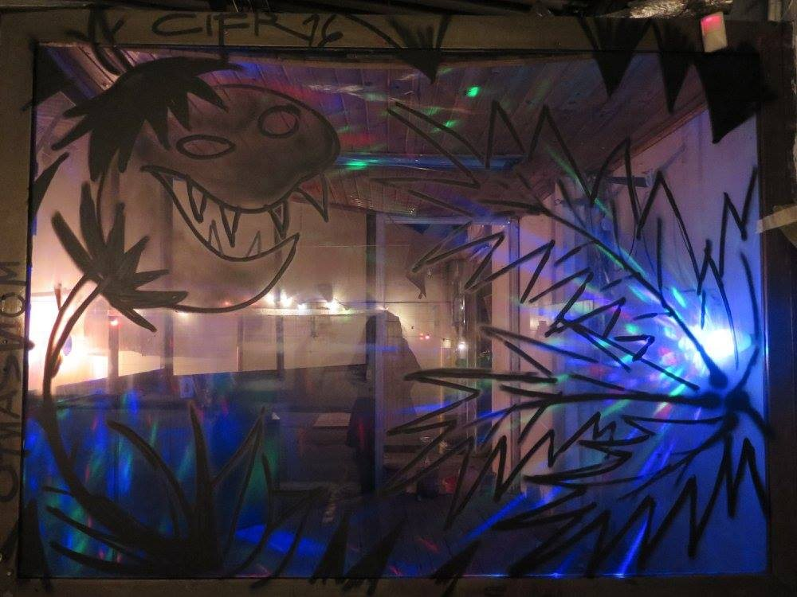
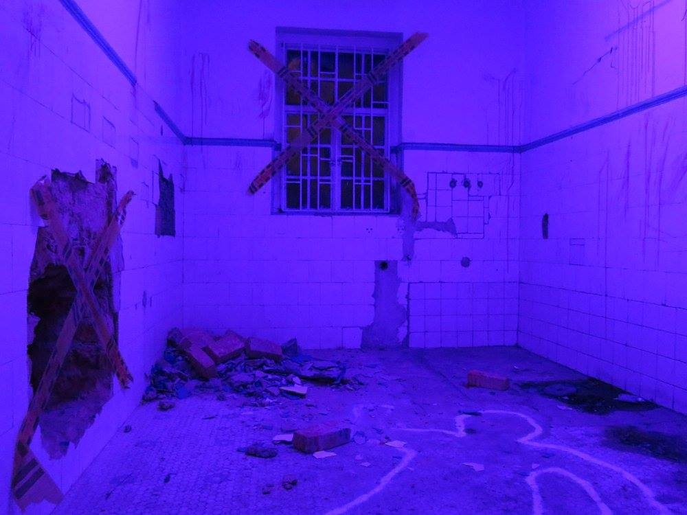
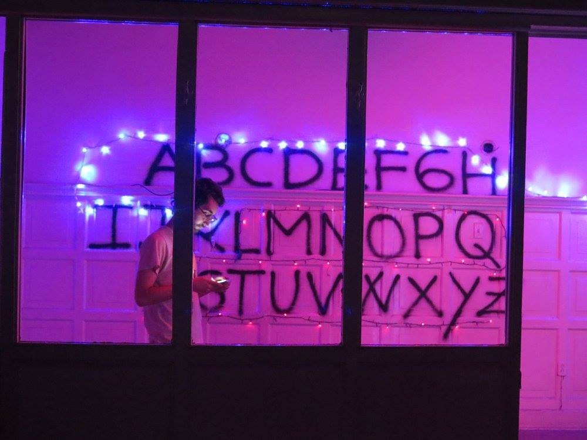
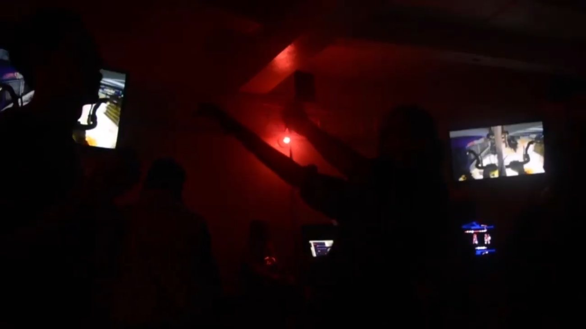
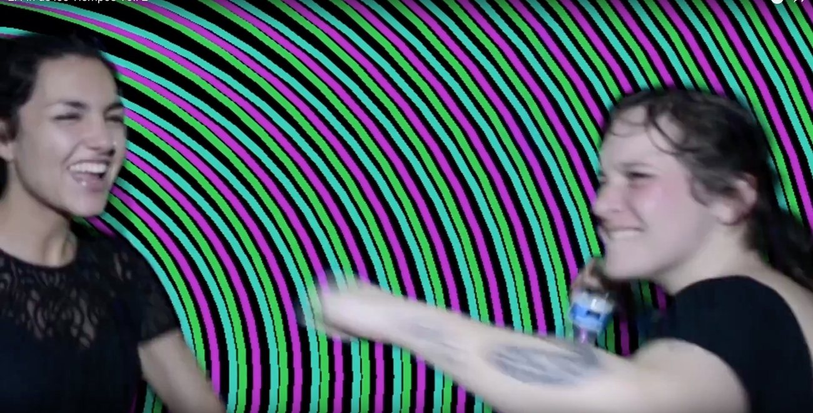
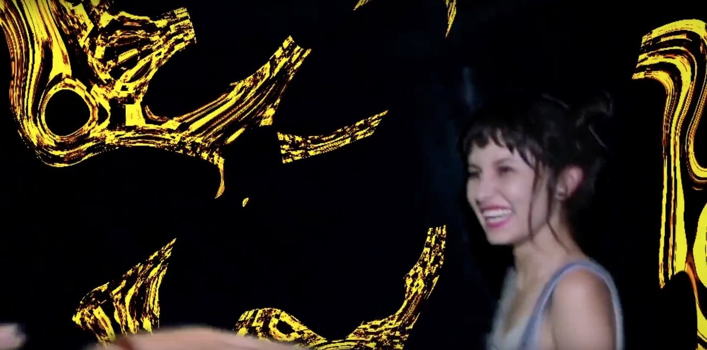
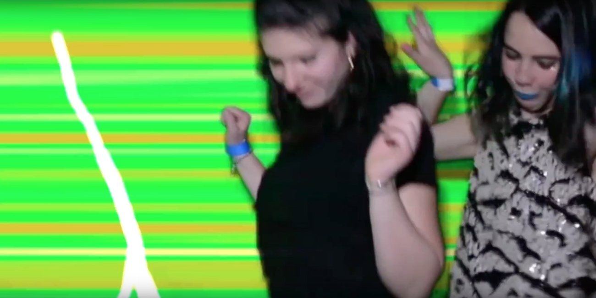
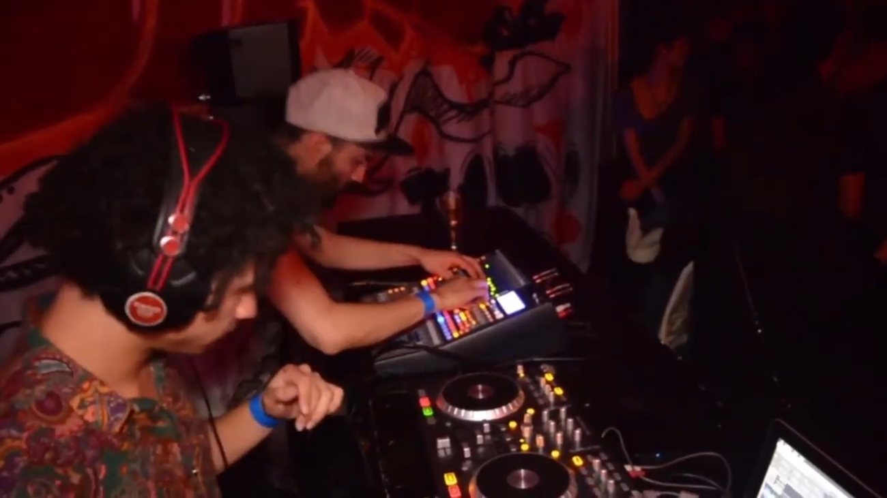

Events · Production Design
El fin de los tiempos
A clandestine open party in unique locations — graffiti, visuals and light installations staged to stimulate the senses. Across its editions it drew audiences into surreal, immersive scenes paired with curated music and live shows.
The Spaces
Each edition took over an abandoned or unconventional venue and reshaped it — hand-painted murals, UV light, chains and found objects turning empty rooms into scenes to walk through.






The Party
Curated music, live projection and VJ visuals filled the rooms — the crowd moving through the painted scenes as the night unfolded.




Other editions
The party ran in several editions, each taking over a different space with its own concept — among them "Entre Nalgas" and a hip-hop night. A couple of them were captured on film.
Entre Nalgas
Hip-hop edition
Credits
- Role
- Production design & set intervention
- Format
- Clandestine party & immersive installation
- Location
- Bogotá · 2016–2017
Full team & collective credits to be added.